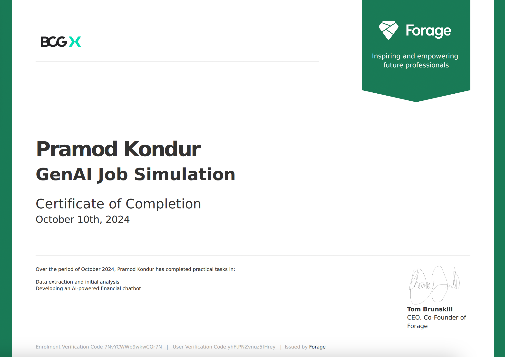
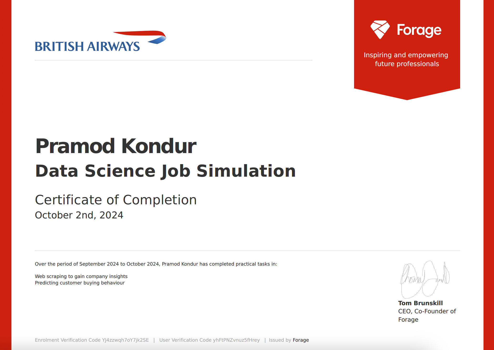
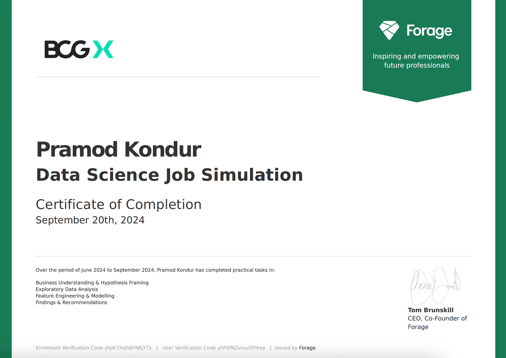

Assistant Electronics Manager - FEB 2022 - JULY 2023
Utilized data analytics to enhance sales performance, resulting in a 13% increase in revenue compared to the previous year.
Awarded the Blue Promise Award for demonstrating exceptional customer service.
Produce Manager - JUL 2020 - AUG 2021
Employed data-driven strategies to boost sales performance, achieving an 11% revenue increase while reducing shrinkage by 27% compared to the previous year.
Developed and executed seasonal promotions that increased sales of high-margin items by 18%, boosting overall profitability in the produce department.
Assistant Systems Engineer - DEC 2016 - JUNE 2017
Trained over 400 employees on C#, ASP.NET, and MySQL technologies, enhancing their technical proficiency and application usage.
Collaborated with a team to add additional features to an existing internal project, focusing on improving application functionality in an Agile environment.
Simulated Experience
BCGx Gen AI Job Simulation - OCT 2024
Completed a job simulation involving AI-powered financial chatbot development
for BCG's GenAI Consulting team.
Integrated and interpreted complex financial data from 10-K and 10-Q reports,
employing rule-based logic to create a chatbot that provides user-friendly
financial insights and analysis.

British Airways Data Science Job Simulation - OCT 2024
Completed a simulation focussing on how data science is a critical component of British Airways success.
Scraped and analysed customer review data to uncover findings
and built a predictive model to understand factors that influence buying behaviour.

BCGx Data Science Job Simulation - SEPT 2024
Completed a customer churn analysis simulation for XYZ Analytics,
demonstrating advanced data analytics skills, identifying essential client
data and outlining a strategic investigation approach.
Completed efficient data analysis, engineering and optimization of a random forest model,
achieving an 95% accuracy rate in predicting customer churn.
Completed a concise executive summary for the Associate Director, delivering
actionable insights for informed decision-making based on the analysis.

Standard Bank Data Science Job Simulation - AUG 2024
Analyzed data quality and distribution to uncover insights into loan applicant profiles and their statuses, while applying data preparation techniques to ensure accurate predictions and utilizing AutoML tools like auto-sklearn alongside traditional ML approaches for model building.
Assessed creditworthiness by examining correlations between applicant incomes, credit histories, and loan amounts, and developed skills in effectively presenting complex data insights to non-technical audiences for clarity and impact.